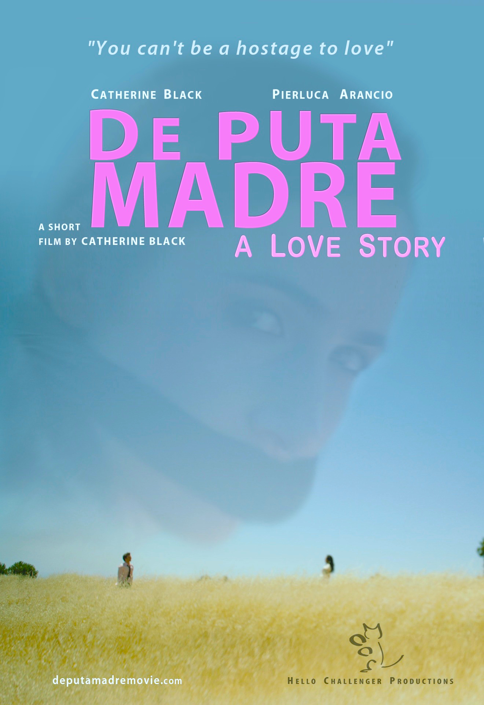

← Back
De Puta Madre: A Love Story
Director
Catherine BlackLead Actors
Notable Festivals
Columbia Gorge International Film Festival '14 (Best Cinematography); Madrid International Film Festival '14 (Best Lead Actress); Filmmaker Festival of World Cinema London '15 (Best Director)

Logline
What begins as a picnic becomes a hostage situation, as a woman held by her unstable ex-lover is forced to reckon with obsession and letting go.
Press
Press — Bern Euler, Festival Director, Canadian Film Fest
“Sexy & Surreal”
Gallery


